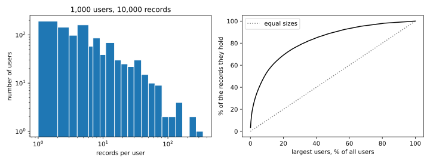
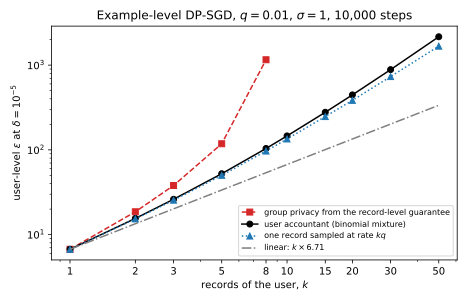

44 User-level differential privacy
Every differential privacy (DP) guarantee in this part so far protects one record. Stochastic gradient descent (SGD) with per-example clipping and Gaussian noise, DP-SGD, reports \(\varepsilon = 6.71\) at \(\delta = 10^{-5}\) for the part’s running example. So an adversary who sees the trained model learns little about whether any single training example was used. But people do not contribute one record each. A user of a messaging app sends hundreds of messages and a patient makes dozens of visits, and what an adversary learns about all of a person’s records together can be much more than what it learns about one. This chapter asks what a record-level \(\varepsilon\) says about a person who contributed \(k\) records, and how to train a model with a guarantee for the person instead.
The one idea is that the neighbouring relation is the privacy unit. A DP guarantee compares the outputs on two neighbouring datasets, and whatever differs between neighbours is what is protected. If neighbours differ in one record, records are protected, and if they differ in all of one person’s records, people are. That leaves two routes to a guarantee for people. The first keeps the record as the unit and pays for the person afterwards, by group privacy or by an accountant that knows the person has \(k\) records. The second makes the person the unit from the start. It samples people, clips each person’s total contribution, and runs the usual accountant with people in place of records.
The running example is the part’s network, with one hidden layer of 64 tanh units and 3,329 weights. It learns labels produced by a fixed teacher network from 10,000 training records of 50 features, and is tested on 20,000 more. This chapter assigns the records to \(U = 1{,}000\) users. The user sizes are drawn first, giving every user one record and spreading the other 9,000 in proportion to log-normal weights. So sizes are very uneven, with a mean of 10 records, a median of 4 and a largest user of 348 (Figure 44.1). Each user then receives a nearest-neighbour cluster of records of that size around a random record, so their records resemble each other the way one person’s messages do. By the direct accountant of Section 44.2, the record-level model protects a user with two records only at \(\varepsilon = 15.54\), and a user with ten at \(\varepsilon = 146.20\). Training with the user as the unit instead reaches a test accuracy of 0.9347 at user-level \(\varepsilon = 4\), against 0.9612 without privacy.

| Symbol | Meaning |
|---|---|
| \(U\), \(n_u\) | the number of users; the number of records of user \(u\) |
| \(k\) | the number of records of one user, or the cap on it |
| \(q\), \(\sigma\), \(C\), \(T\), \(B\) | the sampling rate, noise multiplier, clipping norm, number of steps and expected batch size of DP-SGD, counted in whichever unit is sampled |
| \(H\), \(b_m\) | the number of a user’s records in a Poisson batch, \(H \sim \mathrm{Bin}(k, q)\), and its probabilities |
| \(P_0\), \(P_{(k)}\) | one step’s output without and with the user, in units of \(C\) |
| \(\alpha\), \(A_\alpha\) | a Rényi order; the Rényi moment, the average of the \(\alpha\)-th power of a likelihood ratio |
| \(\varepsilon_{q,\sigma}(\alpha)\), \(\varepsilon_k(\alpha)\) | the Rényi differential privacy (RDP) curve of one step for one record, and for a user with \(k\) records |
| \(\bar g_u\), \(\tilde g_u\) | user \(u\)’s vector, such as their average gradient, and its clipped version |
| \(n_k\) | the number of records kept by a cap of \(k\) per user |
44.1 The privacy unit
A model trained with record-level DP-SGD at \(\varepsilon = 6.71\) is released, and one person in its training set contributed \(k\) of its records. This section asks what the guarantee promises that person. The question has to come first, because a deployment cannot say “your data are protected” until it knows. And the answer depends on a neighbouring relation that the engineer chose, not the person.
The definition of DP never says what a neighbour is, so a guarantee for people is the same definition with a coarser relation.
Definition 44.1 (Example-level and user-level DP) Let each record of a dataset belong to one user. Two datasets are example-level neighbours, \(D \sim D'\), if they differ by adding or removing one record. They are user-level neighbours if they differ by adding or removing all the records of one user. A mechanism \(M\) is user-level \((\varepsilon, \delta)\)-DP if for every pair of user-level neighbours \(D\) and \(D'\) and every event \(S\), \[\Pr[M(D) \in S] \le e^\varepsilon\Pr[M(D') \in S] + \delta. \tag{44.1}\] It is example-level \((\varepsilon, \delta)\)-DP if the same holds for every pair of example-level neighbours.
User-level neighbours are a few example-level steps apart, so an example-level guarantee does say something about users. The tool is group privacy, Theorem 19.2 in Post-processing, group privacy and composition. For two datasets joined by a path of \(k\) neighbouring steps, it says that the guarantee holds with \(k\varepsilon\) in place of \(\varepsilon\), while the slacks \(\delta\) pile up in a geometric sum.
Proposition 44.1 (A record-level guarantee read for users) Let \(M\) be example-level \((\varepsilon, \delta)\)-DP. Then \(M\) is user-level \((k\varepsilon, \delta_k)\)-DP for users with at most \(k\) records, where \[\delta_k = \delta\sum_{j=0}^{k-1}e^{j\varepsilon} = \delta\,\frac{e^{k\varepsilon} - 1}{e^\varepsilon - 1}. \tag{44.2}\] No better bound holds for every example-level \((\varepsilon, \delta)\)-DP mechanism.
Proof.
- User-level neighbours are joined by a short path. Let \(D'\) be \(D\) plus the \(k\) records \(x_1, \dots, x_k\) of one user. Adding them one at a time gives the datasets \(D, D \cup \{x_1\}, \dots, D'\), each an example-level neighbour of the next. A user with fewer records gives a shorter path, and both \(k\varepsilon\) and \(\delta_k\) grow with \(k\), so the bound covers them too.
- Apply group privacy along the path. Theorem 19.2, applied to this path, gives the bound with \(k\varepsilon\) and \(\delta_k\). The path can be walked in either direction, so the bound holds both ways.
- Nothing better holds in general. Proposition 19.1 builds an \((\varepsilon, \delta)\)-DP mechanism, the alarm mechanism, that meets Equation 44.2 with equality on one event when \(\delta\) is small enough. A guarantee known only as “\((\varepsilon, \delta)\)-DP” could come from that mechanism.
User-level DP is not a new privacy notion. It is DP with a coarser neighbouring relation, and the proofs of post-processing, composition and the accountants of Part 4 hold for any fixed relation, so they all hold for it. What must be recomputed is the sensitivity, how far one unit can move the computation. The unit should follow the question “whose participation do I want to hide?”, and Choosing an accountant lists the unit among the things a guarantee must report. For RDP the step from records to groups is weaker than for \((\varepsilon, \delta)\), because Theorem 29.4 halves the order and triples \(\varepsilon\) each time the group doubles.
The price of group privacy grows linearly in \(k\) for \(\varepsilon\) and exponentially in \(k\) for \(\delta\). For pure DP a user with \(k\) records gets \(k\varepsilon\), which is already weak. At \(\varepsilon = 1\) per record, a user with 10 records gets \(\varepsilon = 10\), a likelihood ratio of \(e^{10} \approx 22{,}000\). With \(\delta > 0\) it is worse, because Equation 44.2 multiplies each \(\delta\) by up to \(e^{(k-1)\varepsilon}\). To keep \(\delta_k\) at \(10^{-5}\), the per-record \(\delta\) must be tiny, and a smaller \(\delta\) costs a larger per-record \(\varepsilon\). DP-SGD’s accountant can convert its curve at any \(\delta\), so this trade can be made, but it is a race between a falling \(\delta\) and a rising \(e^{(k-1)\varepsilon}\). For small \(k\) the falling \(\delta\) wins. For larger \(k\) the rising \(\varepsilon\) wins at every \(\delta\), and group privacy gives no \((\varepsilon, 10^{-5})\) guarantee at all.
Example 44.1 The running example’s model is example-level \((6.71, 10^{-5})\)-DP. Read naively through Proposition 44.1, a user with two records gets \(\varepsilon = 2 \times 6.71 = 13.42\) with \(\delta_2 = 10^{-5}(1 + e^{6.71}) = 0.0082\). That is a probability of almost one in a hundred that the guarantee fails outright, which is no guarantee. Re-converting the accountant’s curve at a smaller per-record \(\delta\) does better. A search over per-record \(\delta\), each with its own per-record \(\varepsilon\), finds the one that makes \(\delta_2 = 10^{-5}\). Its per-record \(\varepsilon\) is 9.30, so the user gets \((18.61, 10^{-5})\). For five records the same procedure gives a per-record \(\varepsilon\) of 23.62 and a user-level \(\varepsilon\) of 118.12. For ten records it gives nothing, because no per-record \(\delta\) makes \(\delta_{10}\) as small as \(10^{-5}\). In the running example’s population, 244 of the 1,000 users have at least ten records, and 30 have at least 50.
44.2 A user with k records in example-level DP-SGD
Group privacy treats DP-SGD as a black box, and Example 44.1 shows what that costs. But we know exactly how a user with \(k\) records enters each step of DP-SGD. Each of the user’s records is drawn into the batch independently with probability \(q\), so each step sees a random number of them, between 0 and \(k\). This section computes the user’s guarantee directly from that structure and asks how fast it grows with \(k\).
The record-level accountant is the starting point. Amplification by subsampling compares, in units of \(C\), the output without a record, \(P_0 = \mathcal N(0, \sigma^2)\), with the mixture \((1 - q)P_0 + q\mathcal N(1, \sigma^2)\). It shows that the step’s RDP curve is \(\varepsilon_{q,\sigma}(\alpha) = \ln A_\alpha/(\alpha - 1)\), where at integer orders the Rényi moment is the binomial sum \[A_\alpha = \sum_{j=0}^\alpha\binom\alpha j(1 - q)^{\alpha - j}q^j\exp\Big(\frac{j^2 - j}{2\sigma^2}\Big). \tag{44.3}\] RDP curves add over the \(T\) steps, even when each step depends on earlier outputs (Theorem 29.2). DP-SGD converts the total to \((\varepsilon, \delta)\) at the best order: \[\varepsilon = \min_\alpha\Big[T\varepsilon_{q,\sigma}(\alpha) + \ln\frac{\alpha - 1}\alpha - \frac{\ln\delta + \ln\alpha}{\alpha - 1}\Big]. \tag{44.4}\]
A user enters a step in the same way, except that the shift is no longer 0 or 1. It is the number of the user’s records that are drawn, which is binomial. The worst case is when all the drawn records push the sum by the full \(C\) in the same direction.
Theorem 44.1 (The worst case for a user with k records (Charles et al. 2024, Theorem 3)) Run example-level DP-SGD with Poisson sampling rate \(q\), clipping norm \(C\) and noise multiplier \(\sigma\), on a dataset in which one user owns \(k\) records. Let \(H \sim \mathrm{Bin}(k, q)\) be the number of the user’s records in a batch, with probabilities \(b_m = \binom km q^m(1 - q)^{k - m}\). In units of \(C\), compare \[P_0 = \mathcal N(0, \sigma^2) \qquad\text{and}\qquad P_{(k)} = \sum_{m=0}^k b_m\,\mathcal N(m, \sigma^2). \tag{44.5}\] Then the \(T\) steps satisfy, for this user, the RDP bound \(T\varepsilon_k(\alpha)\) at every order \(\alpha > 1\), with \[\varepsilon_k(\alpha) = \max\big\{D_\alpha(P_{(k)}\|P_0),\ D_\alpha(P_0\|P_{(k)})\big\}. \tag{44.6}\] Some loss whose gradients are aligned attains this curve.
Proof. The plan is to count the user’s records in a step, find what they do to the noisy sum, and then cite the step that shows the aligned case is the worst.
- How many records are drawn. Poisson sampling draws each record independently with probability \(q\). So the number of the user’s \(k\) records in the batch is a sum of \(k\) independent coins, \(H \sim \mathrm{Bin}(k, q)\), independent of which other records are drawn.
- What they do to the sum. Fix the other records’ contribution, which is the same with and without the user. Given \(H = m\), the user adds \(m\) clipped gradients of length at most \(C\), so their sum has length at most \(mC\), with equality when they all point the same way. Along that direction and in units of \(C\), the output is then \(\mathcal N(m, \sigma^2)\) with probability \(b_m\), which is the mixture \(P_{(k)}\).
- The aligned case is the worst. That no other configuration of the user’s gradients, in any dimension, gives a larger divergence is Theorem 3 of Charles et al. (2024), which also justifies the reduction to one dimension. Section M.4 in the appendices proves it for \(D_\alpha(P_{(k)}\|P_0)\) at integer orders. The reason is that gradients pointing in different directions add in squares rather than in length, so they shift the sum less.
- Compose. RDP curves add over the \(T\) steps by Theorem 29.2, which gives \(T\varepsilon_k(\alpha)\).
The divergence \(D_\alpha(P_{(k)}\|P_0)\) has a closed form at integer orders, which checks the numerical accountant and shows where a heavy user’s cost comes from. The idea is that the \(\alpha\)-th power of a mixture over \(m\) becomes an average over \(\alpha\) independent copies of \(H\). The last step of the proof needs the moment generating function of a normal variable, \(\mathbb E[e^{sY}] = e^{s^2\sigma^2/2}\) for \(Y \sim \mathcal N(0, \sigma^2)\), which Proposition 1.10 proves.
Proposition 44.2 (The Rényi moment of a user with k records) Let \(\alpha \ge 2\) be an integer, and let \(H_1, \dots, H_\alpha\) be independent copies of \(H \sim \mathrm{Bin}(k, q)\). Then \(D_\alpha(P_{(k)}\|P_0) = \ln A_\alpha/(\alpha - 1)\), with \[A_\alpha = \mathbb E\Big[\exp\Big(\frac{1}{\sigma^2}\sum_{1\le i<j\le\alpha}H_iH_j\Big)\Big]. \tag{44.7}\] For \(k = 1\) this is the binomial sum Equation 44.3.
Proof. The plan is to write the divergence as an average of a power of the likelihood ratio, turn the power into a product over independent copies, and then average over the output.
- The divergence as an average. By the definition of the Rényi divergence, \(A_\alpha = e^{(\alpha-1)D_\alpha(P_{(k)}\|P_0)}\) is the average of \((P_{(k)}(y)/P_0(y))^\alpha\) over \(y \sim P_0\).
- The ratio of two Gaussians. Two normal densities with the same variance differ only in the square in their exponents. So for \(P_m = \mathcal N(m, \sigma^2)\) the ratio is the exponential of a linear function of \(y\): \[\frac{P_m(y)}{P_0(y)} = \exp\Big(\frac{-(y - m)^2 + y^2}{2\sigma^2}\Big) = \exp\Big(\frac{2my - m^2}{2\sigma^2}\Big). \tag{44.8}\]
- The mixture’s ratio is an average over \(H\). Dividing the mixture by \(P_0\) term by term with Equation 44.8 gives \[\frac{P_{(k)}(y)}{P_0(y)} = \sum_m b_m\exp\Big(\frac{2my - m^2}{2\sigma^2}\Big) = \mathbb E_H\Big[\exp\Big(\frac{2Hy - H^2}{2\sigma^2}\Big)\Big]. \tag{44.9}\]
- A power of an average is an average over independent copies. Multiplying out \(\alpha\) copies of a sum \(\sum_m b_m f(m)\) gives one term for each choice \((m_1, \dots, m_\alpha)\), with weight \(b_{m_1}\cdots b_{m_\alpha}\). That weight is the joint distribution of independent copies. A product of exponentials is the exponential of the sum, so with \(V = H_1 + \dots + H_\alpha\) the total over the copies, \[\Big(\frac{P_{(k)}(y)}{P_0(y)}\Big)^\alpha = \mathbb E\Big[\exp\Big(\frac{2Vy - \sum_iH_i^2}{2\sigma^2}\Big)\Big]. \tag{44.10}\]
- Average over the output. Everything is positive, so the average over \(y\) and the average over the copies can be exchanged. For fixed copies, the normal moment generating function at \(s = V/\sigma^2\) gives \(\mathbb E_{y \sim P_0}[e^{Vy/\sigma^2}] = e^{V^2/(2\sigma^2)}\), so \[A_\alpha = \mathbb E\Big[\exp\Big(\frac{V^2 - \sum_iH_i^2}{2\sigma^2}\Big)\Big]. \tag{44.11}\]
- Only products of different copies remain. Expanding the square gives \(V^2 = \sum_iH_i^2 + 2\sum_{i<j}H_iH_j\). The squares cancel, which leaves Equation 44.7.
- One record. For \(k = 1\) each copy is 0 or 1. If \(J\) of the \(\alpha\) copies are 1, the sum \(\sum_{i<j}H_iH_j\) counts the pairs among them, \((J^2 - J)/2\), and \(J \sim \mathrm{Bin}(\alpha, q)\). Averaging over \(J\) gives Equation 44.3.
The closed form also gives a quick estimate. When \(kq\) is small, most copies are 0, and a light user should look like a single record that is drawn whenever any of the user’s records is.
Corollary 44.1 (A light user looks like one record sampled at rate kq) For an integer order \(\alpha\) and small \(kq\), to leading order in \(kq\), \[\varepsilon_k(\alpha) \approx \frac\alpha2(kq)^2\big(e^{1/\sigma^2} - 1\big), \tag{44.12}\] which is the curve of one record sampled at rate \(kq\) to the same order.
Proof. The plan is to find the first term of Equation 44.7 that costs privacy, and then compare it with one record.
- Terms with at most one non-zero copy are free. For them \(\sum_{i<j}H_iH_j = 0\), so they contribute their probability times 1. All the probabilities add to 1, so only the excess of the other factors over 1 counts.
- The first costly term. The most likely way for a product to be non-zero is for exactly two copies to equal 1. There are \(\binom\alpha2\) pairs of copies, each copy is 1 with probability \(kq(1 - q)^{k-1} \approx kq\) for small \(q\), and the factor is \(e^{1/\sigma^2}\), so \[A_\alpha \approx 1 + \binom\alpha2(kq)^2\big(e^{1/\sigma^2} - 1\big). \tag{44.13}\]
- Compare with one record. This is the first three terms of Equation 44.3 with \(q\) replaced by \(kq\).
- Take the logarithm. Using \(\ln(1 + x) \approx x\) and dividing by \(\alpha - 1\) gives Equation 44.12.
For non-integer orders, and for the reverse direction \(D_\alpha(P_0\|P_{(k)})\), this chapter’s script integrates numerically instead.
So in the regime where amplification works well, only the probability that some record of the user is in the batch matters, about \(kq\). Halving the sampling rate compensates for doubling the user’s records. The per-step curve grows like \((kq)^2\), and the converted \(\varepsilon\) roughly like its square root, so the user’s \(\varepsilon\) grows roughly linearly in \(k\). Beyond that regime it grows faster. For \(k = 50\) and \(q = 0.01\), half of all steps include one of the user’s records, and subsampling stops helping, because it helps only while the unit is usually absent. And the higher terms of Equation 44.7 grow like \(e^{H_iH_j/\sigma^2}\), with \(H_iH_j\) as large as \(k^2\). A step that draws all \(k\) records acts like a mechanism with noise multiplier \(\sigma/k\), and the accountant retreats to orders close to 1, where the conversion is expensive.
Group privacy is the wrong tool for DP-SGD, because it ignores the structure of the mechanism. Example 44.2 shows that from two records on, the direct accountant gives a smaller \(\varepsilon\), and a finite one for every \(k\). The direct accountant assumes the worst case over gradients, all of them aligned, and one might hope real users are milder. But a user’s records resemble each other, so their gradients do partly align, and Theorem 44.1 says some loss attains the bound. An auditor should therefore treat it as the guarantee rather than a pessimistic estimate.

Example 44.2 Table 44.2 applies the accountant of Theorem 44.1 to the running example’s DP-SGD run, with \(q = 0.01\), \(\sigma = 1\), \(T = 10{,}000\) and \(\delta = 10^{-5}\).
| Records of the user \(k\) | 1 | 2 | 5 | 10 | 50 |
|---|---|---|---|---|---|
| User accountant, Equation 44.5 | 6.72 | 15.54 | 52.36 | 146.20 | 2161.43 |
| Best order \(\alpha\) | 4 | 2.5 | 1.65 | 1.3 | 1.05 |
| Group privacy, Equation 44.2 | 6.71 | 18.61 | 118.12 | none | none |
| One record at rate \(kq\) | 6.71 | 15.32 | 50.11 | 134.50 | 1673.08 |
The first column checks the accountant. With one record it is the DP-SGD accountant, 6.72 against 6.71, and the difference comes from the coarser grid of orders this chapter’s script uses (its best order is 4, against 4.1 on the finer grid). At \(\alpha = 4.1\) the two curves agree to all printed digits, \(3.733633 \times 10^{-4}\). For \(k = 2\) and 5 at \(\alpha = 2\), the numerical integral and Equation 44.7 agree to seven digits, at \(6.992273 \times 10^{-4}\) and \(4.626224 \times 10^{-3}\). The reverse direction is smaller, at \(6.119238 \times 10^{-4}\) and \(3.412123 \times 10^{-3}\).
Already at two records, the person behind them is protected only at \(\varepsilon = 15.54\), more than twice the record’s 6.71. At ten, \(\varepsilon = 146.20\) means no protection at all. The rate-\(kq\) estimate of Corollary 44.1 is within 1.5% at \(k = 2\) (15.32 against 15.54) and 8% at \(k = 10\) (134.50 against 146.20). So rerunning the record-level accountant with \(q\) replaced by \(kq\) is a quick estimate of a user’s exposure. In every column it errs on the low side, because it drops the terms in which several of the user’s records are drawn together.
44.3 User-level DP-SGD
Accounting for users after the fact charges a heavy user for every one of their records, and Table 44.2 shows the bill. The alternative changes the algorithm, so that the unit DP-SGD samples, clips and accounts for is the user. McMahan, Ramage, Talwar & Zhang (2018) introduced it for federated learning, where each user’s device computes an update on its own data. This section states the algorithm and asks what it guarantees.
Definition 44.2 (User-level DP-SGD) Fix \(U\) users, a user sampling rate \(q\), a clipping norm \(C\), a noise multiplier \(\sigma\) and a learning rate \(\eta\), and start from weights \(\theta_0\) chosen independently of the data. For \(t = 0, \dots, T - 1\):
- Sample users. Put each user in the set \(S_t\) independently with probability \(q\).
- Per-user update. For each \(u \in S_t\), compute one vector \(\bar g_u\) from user \(u\)’s records alone. It can be their average gradient \(\bar g_u = \frac1{n_u}\sum_{i \in u}\nabla_\theta\ell(\theta_t; z_i)\), or the change in weights after a few local steps of SGD on those records.
- Clip per user. Set \(\tilde g_u = \bar g_u\min(1, C/\|\bar g_u\|)\).
- Noisy sum. Set \(G_t = \sum_{u\in S_t}\tilde g_u + \xi_t\) with \(\xi_t \sim \mathcal N(0, \sigma^2C^2I)\).
- Step. Set \(\theta_{t+1} = \theta_t - \eta\,G_t/(qU)\).
The proof of DP-SGD used four properties of the clipped sum. Each one still holds with users in place of records, so the accountant should not change.
Theorem 44.2 (User-level DP-SGD keeps the record-level accountant) In Definition 44.2, suppose each \(\bar g_u\) is computed from user \(u\)’s records alone and the number of users \(U\) is public. Then releasing \(\theta_1, \dots, \theta_T\) is user-level \((\varepsilon, \delta)\)-DP, with \(\varepsilon\) given by Equation 44.4 and \(q\) the user sampling rate.
Proof. The plan is to check the four properties that the proof for records uses, one at a time.
- One user moves the clipped sum by at most \(C\). Fix the weights \(\theta_t\) and the other sampled users. Each \(\tilde g_v\) is computed from user \(v\)’s records alone, so adding user \(u\) leaves every other term unchanged and adds \(\tilde g_u\), of length at most \(C\). However many records \(u\) has, they enter only through \(\tilde g_u\).
- One step is a subsampled Gaussian mechanism over users. User \(u\) enters \(S_t\) with probability \(q\), independently of the other users. So the output with \(u\) is a mixture: the same as without \(u\) with probability \(1 - q\), and shifted by \(\tilde g_u\) with probability \(q\). After rescaling by \(C\) and rotating the shift onto one axis, the worst case is the record-level pair, whose curve is \(\varepsilon_{q,\sigma}(\alpha)\).
- The division is post-processing. Dividing by \(qU\) uses only public numbers, as dividing by \(n\) does in example-level DP-SGD.
- Compose and convert. RDP composition over the \(T\) adaptive steps and Equation 44.4 finish the proof.
The count that matters is the number of units. User-level DP-SGD has the privacy of example-level DP-SGD on a dataset of \(U\) records. To keep an expected batch of \(B\) units, its sampling rate must be \(B/U\), larger than \(B/n\) by the average number of records per user, so amplification is weaker. On the running example, with 1,000 steps and an expected batch of 100 units, a record-level \(\varepsilon = 4\) needs \(\sigma = 0.778\) at \(q = 0.01\). A user-level \(\varepsilon = 4\) needs \(\sigma = 3.78\) at \(q = 0.1\). With \(C = 0.5\), the noise on the averaged update, \(\sigma C/B\), is then 0.0189 against 0.00389, about five times larger. That is the honest price of protecting people. There are ten times fewer of them than records, so the sampling rate is ten times larger, and the noise must grow to make up for the weaker amplification.
In return, the records inside a user are free. The guarantee does not depend on \(n_u\), so a user’s records can be averaged, used for several local steps or subsampled, as long as the result is one clipped vector computed from that user’s data alone. More records per user then improve each \(\bar g_u\) while the noise stays fixed (Levy et al. 2021). The proof does assume two things. Step 1 rules out any computation that mixes users, such as normalizing features by an average over users, and it fails if one person’s records are spread over several accounts, since the unit is then the account and the person is again a group. Step 2 needs users to be Poisson-sampled, and iterating over users in a shuffled order is a different mechanism, as it is for records.
A common variant keeps the code for per-example gradients. It replaces steps 2 and 3 by per-record clipping and a cap: keep at most \(k\) records per user, clip each record’s gradient to \(C\), and sum them. One user can then move the sum by \(kC\), so the variant should pay for the cap in noise.
Proposition 44.3 (Per-record clipping inside user sampling) Run Definition 44.2 with users sampled whole at rate \(q\), but let each user’s vector be the sum of at most \(k\) of their records’ gradients, each clipped to \(C\). Then each step has the RDP curve of noise multiplier \(\sigma/k\), whose Rényi moment at integer order \(\alpha\) is \[A_\alpha = \sum_{j=0}^\alpha\binom\alpha j(1 - q)^{\alpha - j}q^j\exp\Big(\frac{k^2(j^2 - j)}{2\sigma^2}\Big). \tag{44.14}\]
Proof.
- The user’s shift. The user’s vector is a sum of at most \(k\) vectors of length at most \(C\), so its length is at most \(kC\). The user is still sampled as a whole with probability \(q\).
- The pair. In units of \(C\), step 2 of the proof of Theorem 44.2 now compares \(\mathcal N(0, \sigma^2)\) with \((1 - q)\mathcal N(0, \sigma^2) + q\mathcal N(k, \sigma^2)\).
- Rescale. Dividing the output by \(k\) is an invertible map, so it changes no divergence. It gives the pair with shift 1 and noise \(\sigma/k\), whose moment is Equation 44.3 with \(\sigma/k\) in place of \(\sigma\), which is Equation 44.14.
This chapter’s script checks Equation 44.14 at \(k = 2\) and \(\alpha = 3\), where it and the binomial sum at \(\sigma/k\) both give \(8.219438 \times 10^{-2}\). So clipping each record and summing at most \(k\) of them reuses existing code but pays a factor \(k\) in noise multiplier. Averaging before clipping costs no extra noise, whatever the user’s size, and it gives every user a vector of the same kind whatever their size, which keeps the clipping norm meaningful across users. Summing a user’s gradients and then clipping the sum is also valid, with sensitivity \(C\), and Section 44.5 shows that it gives heavy users more weight.
Example 44.3 Table 44.3 gives the noise multiplier for four user-level budgets, with 1,000 steps and an expected batch of 100 sampled units. The column “record-level” is the noise that protects only records. Column (a) is example-level DP-SGD on all 10,000 records at \(q = 0.01\), accounted by Theorem 44.1 for the largest user, with \(k = 348\). Column (b) is user-level DP-SGD at \(q = 0.1\). Column (c) keeps at most 2 records per user, 1,807 records in all, and runs example-level DP-SGD on them at \(q = 100/1{,}807 = 0.0553\), accounted for \(k = 2\) (Section 44.4).
| User-level \(\varepsilon\) | Record-level (not user-level) | (a) All records, \(k = 348\) | (b) User-level DP-SGD | (c) At most 2 records per user |
|---|---|---|---|---|
| 1 | 1.52 | 449 | 12.9 | 14.4 |
| 2 | 1.03 | 237 | 6.89 | 7.62 |
| 4 | 0.778 | 128 | 3.78 | 4.18 |
| 8 | 0.616 | 70.3 | 2.18 | 2.4 |
Column (a) is the cost of keeping the record as the unit when one user has 348 records. In each step this user has on average \(348 \times 0.01 = 3.48\) records in the batch, so subsampling hardly hides them, and the noise must cover a shift of several clipping norms in nearly every step. At \(\varepsilon = 4\) the noise on the averaged gradient has standard deviation \(128 \times 0.5/100 = 0.64\) per coordinate. Its length is then about \(0.64 \times \sqrt{3{,}329} = 36.9\), against a clipped average of length at most \(0.5\).
44.4 Contribution bounding
User-level DP-SGD needs a data pipeline that groups records by user and computes one vector per user. Many training pipelines are built around records instead, with shuffled files of examples, per-example gradient code and fixed-length batches. This section asks whether you can keep such a pipeline and still protect users. You can, if you limit how many records each user contributes, and the question becomes what limit to choose.
Definition 44.3 (Contribution bounding) Contribution bounding with cap \(k\) keeps at most \(k\) records of each user and discards the rest. The records kept for user \(u\) are chosen from \(u\)’s own records, with randomness independent of everything else, for example uniformly at random. The bounded dataset has \(n_k = \sum_u\min(n_u, k)\) records.
After bounding, a user-level neighbour is a group of at most \(k\) records of one user, and Theorem 44.1 already accounts for exactly that.
Theorem 44.3 (Bounding gives a user-level guarantee) Run example-level DP-SGD with sampling rate \(q\) on the dataset bounded at cap \(k\). The result is user-level \((\varepsilon, \delta)\)-DP, with \(\varepsilon\) given by Equation 44.4 applied to the curve \(T\varepsilon_k(\alpha)\) of Theorem 44.1 for a user with \(k\) records.
Proof.
- Bounding acts on each user separately. Write the bounded dataset as the union over users of \(\pi(D_u)\), where \(D_u\) is user \(u\)’s records and \(\pi\) keeps at most \(k\) of them. Adding user \(u\) adds \(\pi(D_u)\) and changes nothing else, because \(\pi\) looks only at \(u\)’s records and uses independent randomness. So user-level neighbours become datasets that differ in at most \(k\) records, all of one user. A rule that looked at other users’ data, such as keeping the records most similar to the rest of the dataset, would break this step.
- Account for those records. Example-level DP-SGD draws each of the user’s at most \(k\) records independently with probability \(q\), so Theorem 44.1 gives the pair Equation 44.5 for one step. A user with fewer records is a \(k\)-record user some of whose clipped gradients are 0, and the worst case of Theorem 44.1 covers every gradient of length at most \(C\), including 0.
- Compose and convert, as in Theorem 44.1 and Equation 44.4.
The cap trades the noise the accountant requires against the data you throw away. Both sides of the trade follow from results above, the noise from Corollary 44.1 and the data from how the expected update weights each record.
Proposition 44.4 (What the cap costs) Under contribution bounding with cap \(k\), two things change as \(k\) grows. When \(kq\) is small and \(\sigma\) large, holding the user-level budget fixed at a fixed \(q\) requires a noise multiplier that grows in proportion to \(kq\). And the expected update gives user \(u\) weight \(\min(n_u, k)/n_k\) instead of \(n_u/n\), so every user with more than \(k\) records loses weight.
Proof.
- The noise. For large \(\sigma\), \(e^{1/\sigma^2} - 1 \approx 1/\sigma^2\), so the per-step curve of Equation 44.12 becomes about \(\frac\alpha2(kq/\sigma)^2\). It depends on \(k\), \(q\) and \(\sigma\) only through \(kq/\sigma\), so holding it fixed means \(\sigma \propto kq\). Doubling \(k\) then requires either halving \(q\), which halves the batch, or doubling \(\sigma\).
- The weights. Before bounding, the expected update of DP-SGD averages over all \(n\) records, each with weight \(1/n\). After it, the average is over the \(n_k\) kept records, of which user \(u\) has \(\min(n_u, k)\). A user with \(n_u > k\) therefore loses weight, and their records beyond \(k\) are not used at all.
Choosing \(k\) is a bias–variance trade-off. Amin, Kulesza, Muñoz Medina & Vassilvitskii (2019) studied this choice for private empirical risk minimization, and showed that the best cap depends on the distribution of user sizes. A cap above most users’ sizes buys little data at a large noise cost, and a cap below them throws away most of the data, the same trade as choosing a clipping norm. The cap depends on the data, so it should come from public knowledge of the population or be chosen privately. Choosing it by trying several caps and reading test accuracy, as the example below does to show the trade-off, spends privacy that the accountant does not see (Hyperparameter tuning).
Which records to keep also matters. By step 1 of the proof of Theorem 44.3, any rule that looks only at the user’s own records is allowed, and Chua et al. (2024) report that keeping each user’s longest records worked best on one of their language datasets. Bounding also combines with user-level DP-SGD that averages each user’s records, where a cap bounds compute and costs data but no noise.
Example 44.4 Table 44.4 fixes the user-level budget at \(\varepsilon = 4\) and \(\delta = 10^{-5}\), with 1,000 steps and an expected batch of 100 records. For each cap the sampling rate is \(q = 100/n_k\), and \(kq\) is roughly the chance that a user with \(k\) kept records has one in a batch.
| Cap \(k\) | Records kept | Sampling rate \(q\) | \(kq\) | Noise multiplier \(\sigma\) | Test accuracy |
|---|---|---|---|---|---|
| 1 | 1,000 (10.0%) | 0.1 | 0.100 | 3.78 | 0.8917 |
| 2 | 1,807 (18.1%) | 0.0553 | 0.111 | 4.18 | 0.8920 |
| 5 | 3,506 (35.1%) | 0.0285 | 0.143 | 5.34 | 0.8790 |
| 10 | 5,063 (50.6%) | 0.0198 | 0.198 | 7.34 | 0.8276 |
| 20 | 6,631 (66.3%) | 0.0151 | 0.302 | 11.2 | 0.7562 |
| 50 | 8,437 (84.4%) | 0.0119 | 0.593 | 21.8 | 0.6401 |
Raising the cap from 1 to 50 multiplies the data by 8.4 and the noise multiplier by 5.8, and accuracy falls from 0.8917 to 0.6401. Since \(kq\) grows by \(0.593/0.100 = 5.93\), proportionality to \(kq\) would predict \(3.78 \times 5.93 = 22.4\) at the largest cap, close to the accountant’s 21.8, although at \(kq = 0.593\) the small-\(kq\) regime of Proposition 44.4 no longer holds. On this task the noise dominates, because a dataset of 1,000 records, one per user, already holds most of what the network can learn privately at this budget. Every extra record per user costs more in noise than it adds in signal, and the caps 1 and 2 are tied. The row \(k = 1\) is user-level DP-SGD on one record per user in disguise, since sampling one record per user at rate 0.1 is sampling users at rate 0.1, with the same \(\sigma = 3.78\).
44.5 Heterogeneous users
User sizes are rarely equal. In the running example’s population, the 30 users with at least 50 records each hold 30.6% of the records, while the smallest half of the users hold 10.3% (Figure 44.1). Example-level training weights each user by their number of records, and user-level training does not. This section asks what objective user-level DP-SGD optimizes, and what that means for heavy users.
Averaging over the sampling cancels the factor \(q\), and the noise has mean zero, so the expected update should be a plain average over users of their clipped vectors.
Proposition 44.5 (The expected user-level update) In Definition 44.2, averaged over the user sampling and the noise, the update direction is \[\mathbb E\Big[\frac{G_t}{qU}\Big] = \frac1U\sum_{u=1}^U\min\Big(1, \frac{C}{\|\bar g_u\|}\Big)\bar g_u, \tag{44.15}\] in which each user’s term has length at most \(C/U\), whatever their number of records. Example-level DP-SGD gives user \(u\)’s records together the weight \(n_u/n\) instead.
Proof. The plan is to average over the sampling and the noise, then bound one user’s weight, then compare it with example-level training.
- Average over the sampling. User \(u\) is in \(S_t\) with probability \(q\), so the expected sum of the sampled \(\tilde g_u\) is \(q\sum_u\tilde g_u\). The noise has mean zero.
- Divide by \(qU\). The \(q\) cancels, which leaves \(\frac1U\sum_u\tilde g_u\). That is Equation 44.15, by the definition of \(\tilde g_u\).
- The weight of one user. Clipping gives \(\|\tilde g_u\| \le C\) for every user, so each term has length at most \(C/U\). The share of any group of users in the update is therefore at most their share of the users.
- Example-level. The same computation for DP-SGD over records (DP-SGD) gives each record weight \(1/n\), so user \(u\)’s records together have weight \(n_u/n\).
User-level training therefore changes the objective, not only the noise. With averaged per-user gradients, the model minimizes a clipped version of the average over users of each user’s average loss, \(\frac1U\sum_u\frac1{n_u}\sum_{i\in u}\ell(\theta; z_i)\), rather than the average over records. For a keyboard model, weighting people equally keeps a few very active users from defining everyone’s suggestions. For a model meant to fit the overall distribution of records, it under-weights heavy users’ content, which matters when heavy users differ from light ones.
Clipping caps heavy users a second time. A heavy user’s average gradient is a good estimate, typically short once the model fits their data. But if their data are unusual, the gradient is long and is clipped to \(C\), the user-level analogue of what clipping does to records with large gradients (Disparate impact). Summing a user’s gradients before clipping sits between record weighting and user weighting. A heavy user’s vector is then up to \(n_u\) times longer than one record’s, so their influence rises with \(n_u\) until it reaches \(C\).
Example 44.5 The 30 users with at least 50 records hold 30.6% of the records, and so 30.6% of the weight in the expected example-level update. Under user-level DP-SGD, Proposition 44.5 caps their weight at \(30/1{,}000 = 3.0\%\). To see whether that hurts the model where heavy users’ data are, the script splits the test set by the owner of each test point’s nearest training record. A heavy user’s records were chosen as the nearest neighbours of one seed in 50 dimensions, so they spread widely, and 68.3% of test points have a heavy user’s record as their nearest neighbour. At user-level \(\varepsilon = 4\), user-level DP-SGD reaches 0.9361 on those points and 0.9319 on the others, against 0.9607 and 0.9622 for the non-private model. On this task, down-weighting heavy users costs nothing measurable, because one teacher network labels every record, so the light users’ records teach the same function. On data where heavy users’ records follow their own patterns, the same reweighting would cost accuracy on those patterns.
44.6 Comparing the strategies on the running example
Three ways to train the running example with a user-level guarantee are now on the table. Strategy (a) runs example-level DP-SGD on all records, accounted for the heaviest user by Theorem 44.1 with \(k = 348\). Strategy (b) is user-level DP-SGD, with the guarantee of Theorem 44.2. Strategy (c) bounds contributions to two records per user and runs example-level DP-SGD, with the guarantee of Theorem 44.3 at \(k = 2\). This section asks which model is best at the same user-level \((\varepsilon, \delta)\).
Example 44.6 Table 44.5 trains each strategy for 1,000 steps with an expected batch of 100 units, \(C = 0.5\) and \(\eta = 0.5\), at the noise multipliers of Table 44.3, one run each.
| User-level \(\varepsilon\) | (a) Example-level, all records | (b) User-level DP-SGD | (c) At most 2 records per user |
|---|---|---|---|
| 1 | 0.5318 | 0.8065 | 0.7084 |
| 2 | 0.5582 | 0.9028 | 0.8374 |
| 4 | 0.5713 | 0.9347 | 0.8810 |
| 8 | 0.5478 | 0.9442 | 0.9333 |
| Non-private, 1,000 steps | 0.9612 |
The cap \(k = 2\) is the best cap at \(\varepsilon = 4\) in Table 44.4, tied with \(k = 1\), and choosing it from test accuracy is a leak that a real deployment would have to pay for. Run-to-run variation is of the order of a point at these budgets, which is why the cap of 2 scores 0.8810 here and 0.8920 in its separate run of Table 44.4. The cap \(k = 1\) and user-level DP-SGD on one random record per user are the same algorithm with the same \(\sigma\), and two runs of it gave 0.8917 and 0.9070.

Keeping the record as the unit fails. Strategy (a) is at chance, between 0.53 and 0.57, at every budget up to \(\varepsilon = 8\), because the heaviest user dictates the noise for everyone, and a \(\sigma\) between 70.3 and 449 drowns every gradient. This is Figure 44.2 in practice: an example-level pipeline on data with heavy users needs either an enormous \(\varepsilon\) or a cap.
Changing the unit wins. User-level DP-SGD is the best strategy at every budget, with 0.9347 at \(\varepsilon = 4\) against 0.9612 for the non-private model. It needs a little less noise than the cap of 2, and unlike the cap it uses every record, through the per-user average. Its advantage is largest at small budgets, 9.8 points at \(\varepsilon = 1\) against 1.1 points at \(\varepsilon = 8\). Its cost is compute, since each step processes the records of about 100 users, about 1,000 records, ten times what the example-level strategies process. Bounding is the fallback, and strategy (c) keeps the example-level pipeline and loses 5 to 10 points against (b) below \(\varepsilon = 8\). It comes close at \(\varepsilon = 8\), where the noise is small enough that the discarded data, not the noise, limits accuracy.
Published comparisons on language models agree. Chua et al. (2024) find that user-level DP-SGD generally beats contribution bounding, especially at small budgets, and Charles et al. (2024) find that user-level sampling usually wins, though not always.
At \(\varepsilon = 4\) user-level DP-SGD loses 2.7 points against the non-private model, while the record-level model of DP-SGD reached 0.9548 at the same \(\varepsilon\). The difference between 0.9548 and 0.9347 is the price of the unit, since the guarantee now covers the person with 348 records as well as the one with a single record.
44.7 Code
The script code/user_level.py builds the user population and implements the user accountant of Theorem 44.1 by numerical integration. It checks the accountant against Equation 44.7 and Equation 44.3, compares it with group privacy, and trains the three strategies with the part’s network. It imports the model, DP-SGD and the record-level accountant from code/dp_sgd.py. From the repository root:
uv run python code/part05-dp-ml/user_level.pyIt takes about a minute and a half, most of it spent in user-level DP-SGD, which processes about 1,000 records per step, and in finding the noise multiplier for the user with 348 records.
| Experiment | Result |
|---|---|
| Population | 1,000 users; mean 10, median 4, largest 348 records; 193 users with one record |
| Accountant checks | \(k = 1\) matches the subsampled Gaussian; integral matches Equation 44.7 to seven digits |
| Running example, user with \(k\) records | \(\varepsilon = 15.54\) at \(k = 2\), 146.20 at \(k = 10\); group privacy 18.61 and none |
| Noise at user-level \(\varepsilon = 4\) | \(\sigma = 128\) (all records), 3.78 (user-level), 4.18 (cap 2) |
| Contribution bounding at \(\varepsilon = 4\) | 0.8917 at \(k = 1\) down to 0.6401 at \(k = 50\) |
| Strategies at \(\varepsilon = 4\) | 0.5713 (all records), 0.9347 (user-level), 0.8810 (cap 2); non-private 0.9612 |
| Heavy users | 30.6% of records, at most 3.0% of the user-level update |
tests/test_user_level.py checks that the output still matches.
44.8 Summary
| Result | Statement | Use |
|---|---|---|
| Definition 44.1 | User-level neighbours differ in all the records of one user | Name the privacy unit with every \(\varepsilon\) |
| Proposition 44.1 | Example-level \((\varepsilon, \delta)\) gives user-level \((k\varepsilon, \delta\frac{e^{k\varepsilon} - 1}{e^\varepsilon - 1})\), tightly | Any mechanism’s guarantee for users; not for DP-SGD, where it fails from \(k = 10\) |
| Theorem 44.1 | A user with \(k\) records in example-level DP-SGD: \(\mathcal N(0, \sigma^2)\) against \(\sum_mb_m\mathcal N(m, \sigma^2)\), tight | Auditing what an existing DP-SGD model guarantees to heavy users |
| Proposition 44.2 | \(A_\alpha = \mathbb E[\exp(\sigma^{-2}\sum_{i<j}H_iH_j)]\) at integer \(\alpha\) | Checking the numerical accountant |
| Corollary 44.1 | \(\varepsilon_k(\alpha) \approx \frac\alpha2(kq)^2(e^{1/\sigma^2} - 1)\) for small \(kq\) | Quick estimate: rerun the record-level accountant at rate \(kq\), and expect the truth to be a little worse |
| Definition 44.2, Theorem 44.2 | Sample users, clip one vector per user: DP-SGD’s accountant with users as units | The default for user-level training; it pays for the number of people, not their records, and uses all their data |
| Proposition 44.3 | Per-record clipping, at most \(k\) records, users sampled whole: noise multiplier \(\sigma/k\) | Reusing per-example gradient code, at a factor \(k\) in noise |
| Definition 44.3, Theorem 44.3 | At most \(k\) records per user, chosen per user; account for \(k\) records | Keeping a record-based pipeline; choose the cap from public knowledge |
| Proposition 44.4 | Noise grows like \(kq\); users above the cap lose weight | Choosing \(k\) as a bias–variance trade-off |
| Proposition 44.5 | \(\mathbb E[G_t/(qU)] = \frac1U\sum_u\min(1, C/\Vert\bar g_u\Vert)\bar g_u\) | Deciding how heavy users count: averaging weights people equally, summing before clipping weights records until the clip |
44.9 References
- McMahan, Ramage, Talwar & Zhang, “Learning Differentially Private Recurrent Language Models” (ICLR 2018). User-level DP-SGD in federated learning: sample users, clip each user’s update, add Gaussian noise, account with users as the unit.
- Charles, Ganesh, McKenna, McMahan, Mitchell, Pillutla & Rush, “Fine-Tuning Large Language Models with User-Level Differential Privacy” (arXiv 2407.07737, 2024). The tight accountant for example-level sampling (their Theorem 3, the mixture of Equation 44.5), and an empirical comparison of example-level and user-level sampling for language models.
- Chua, Ghazi, Huang, Kamath, Kumar, Liu, Manurangsi, Sinha & Zhang, “Mind the Privacy Unit! User-Level Differential Privacy for Language Model Fine-Tuning” (Conference on Language Modeling 2024; arXiv 2406.14322). Contribution bounding with group privacy against user-wise DP-SGD, with record-selection rules and the choice of the cap.
- Amin, Kulesza, Muñoz Medina & Vassilvitskii, “Bounding User Contributions: A Bias-Variance Trade-off in Differential Privacy” (ICML 2019). The cap on records per user as a bias–variance trade-off, and how the best cap depends on the distribution of user sizes.
- Levy, Sun, Amin, Kale, Kulesza, Mohri & Suresh, “Learning with User-Level Privacy” (NeurIPS 2021). Theory of user-level private learning when each user holds several samples.
- Mironov, “Rényi Differential Privacy” (CSF 2017). Group privacy for RDP.
- Dwork & Roth, The Algorithmic Foundations of Differential Privacy (Foundations and Trends in Theoretical Computer Science, 2014). Group privacy for pure and approximate DP.